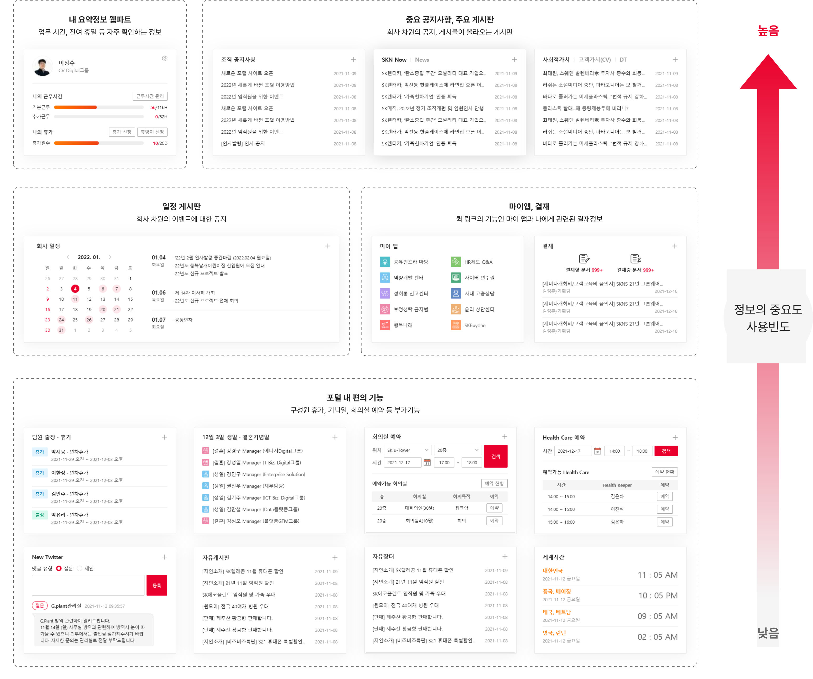
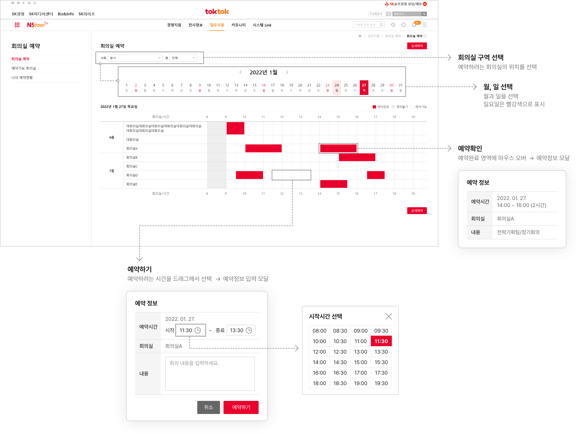

SEO JEA
이력서
Notion
경력기술서
SKNS 포털 구축
소통과 정보 공유의 목적을 달성할 수 있는 정보의 중요도에 맞춘 UX를 제공하고
다양한 기능을 포함하는 웹파트의 UI가 잘 어우러질 수 있도록 디자인하였습니다.
작업기여도
디자인 20%
웹 퍼블리싱 100%
중요도 순으로 제공되는 기본 웹파트
제공되는 정보와 중요도와 사용 빈도의 순서를 기반으로 기본 웹파트 구성을 제공하여 사용자가 수정하지 않아도 유용한 정보를 쉽게 얻을 수 있도록 하였습니다.

다양한 뷰모드를 제공하는 게시판
동일한 게시판에 대해서 사용자가 뷰모드를 선택할 수 있는 기능을 제공하여
사용자가 보다 주조덕으로 사이트를 이용할 수 있도록 하였고, 각 뷰모드 특성에 맞춘 디자인을 제공하였습니다.
쉬운 사용을 위한 기능적인 UI
기능적인 이해도를 높일 수 있는 UI를 제공하여 서비스에 대한 난이도를 낮추었습니다.

구성원과의 화합 도모를 위한 포털안의 포털
표준 게시판, 일정 게시판, 갤러리 게시판 등을 통해 구성원간 소통이 가능한 커뮤니티를 제공합니다.
목록으로 돌아가기